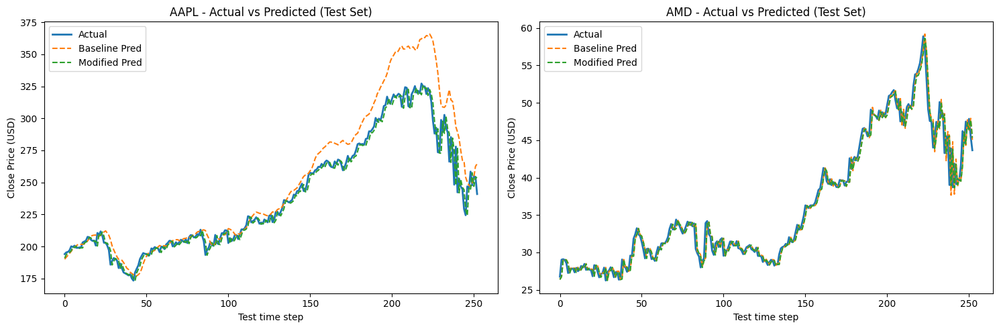
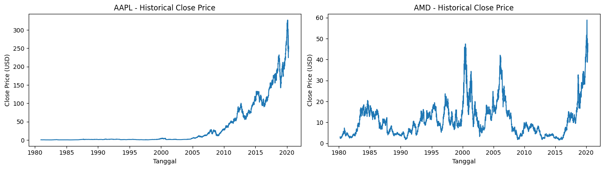
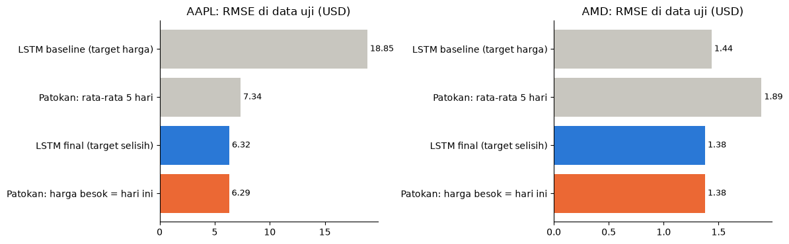

Deep learning · Time series
Prediksi Harga Saham dengan LSTM
Model LSTM yang memprediksi harga penutupan satu hari ke depan untuk saham Apple (AAPL) dan AMD dari harga lima hari sebelumnya. Isi utamanya adalah eksperimen bertahap, lalu satu pertanyaan yang sering dilewatkan: apakah model itu lebih baik dari sekadar menebak harga besok sama dengan harga hari ini? Soal ujian akhir mata kuliah Deep Learning, BINUS University.
- 40tahun data harian
- 10varian model diuji
- 3×error baseline AAPL dibanding patokan
- 6,32RMSE model final, patokan 6,29

Masalah
Tugasnya memprediksi harga penutupan hari berikutnya dengan arsitektur LSTM, lalu memodifikasi baseline supaya lebih baik. Tantangannya, harga saham satu hari ke depan mendekati random walk: harga besok kira-kira sama dengan harga hari ini ditambah gangguan kecil. Menambah ukuran model belum tentu membantu, jadi yang perlu dicari adalah perubahan yang benar-benar berdampak.
Data
Harga harian AAPL (9.909 hari, Desember 1980 sampai April 2020) dan AMD (10.098 hari, Maret 1980 sampai April 2020). Tidak ada nilai kosong maupun tanggal ganda. Satu tahun terakhir dijadikan data uji, dan periode itu mencakup crash awal pandemi COVID-19.

Cara kerja
- Pembagian waktuSatu tahun terakhir untuk uji, sisanya untuk latih. Data tidak diacak karena urutan waktu penting.
- Scaling
MinMaxScalerhanya di-fit pada data latih, supaya informasi data uji tidak bocor. - Jendela inputHarga 5 hari berturut-turut menjadi input, harga hari berikutnya menjadi target.
- Pelatihan10% terakhir data latih menjadi validasi untuk early stopping.
- EvaluasiRMSE, MAE, dan MAPE dihitung setelah prediksi dikembalikan ke skala USD.
Temuan dari eksperimen
Model final tidak mengalahkan patokan harga-kemarin
Patokan paling sederhana untuk harga saham adalah menebak harga besok sama dengan harga hari ini. Di data uji yang sama, patokan ini mendapat RMSE AAPL 6,29, sedikit lebih baik dari model final (6,32). MAE-nya juga sedikit lebih baik di kedua saham. Baseline LSTM malah tiga kali lebih buruk dari patokan.
Jadi penurunan RMSE AAPL 66% dari baseline sebenarnya adalah model yang kembali ke level patokan, bukan model yang mengalahkan patokan. Model final praktis mempelajari selisih yang hampir nol. Ini sesuai sifat random walk harga saham: dari lima harga terakhir saja, harga besok tidak bisa ditebak lebih baik dari harga hari ini.

Model yang lebih besar tidak membantu
Menumpuk dua layer LSTM, menambah dropout, atau menambah layer Dense tidak konsisten membaik. Varian paling kompleks justru paling buruk untuk AMD, dengan RMSE 3,28 dibanding 1,44 pada baseline. Satu-satunya perubahan arsitektur yang membaik di kedua saham adalah yang paling sederhana: mengganti aktivasi ReLU menjadi tanh.
Yang berdampak besar adalah mengubah apa yang diprediksi
Uji Augmented Dickey-Fuller menunjukkan harga AAPL tidak stasioner (p-value 0,999), sedangkan selisih harga hariannya stasioner (p-value di bawah 0,001). Karena itu model dilatih memprediksi selisih terhadap harga hari terakhir di jendela input, lalu hasilnya dijumlahkan kembali dengan harga itu.
Dengan arsitektur yang sama persis, RMSE AAPL turun dari 11,37 menjadi 6,32. Mengganti fungsi loss atau learning rate setelahnya tidak mengubah hasil secara berarti.
Perbaikan terbesar ada di saham yang paling tidak stasioner
Harga AAPL naik ratusan kali lipat selama periode data, sedangkan AMD bergerak naik turun. Perubahan target membantu AAPL jauh lebih banyak daripada AMD.
Kesimpulan diuji di dua saham
Setiap varian dijalankan pada AAPL dan AMD sekaligus. Perubahan yang hanya membantu satu saham tidak dipilih, supaya kesimpulannya tidak kebetulan cocok dengan satu data saja.
Hasil
Beberapa varian penting dari sepuluh yang diuji, dengan RMSE di data uji dalam USD:
| Varian | AAPL | AMD |
|---|---|---|
| Baseline: LSTM(50, ReLU), target harga | 18,85 | 1,44 |
| Aktivasi diganti tanh | 11,37 | 1,42 |
| Dua layer LSTM, dropout 0,1 | 11,01 | 1,45 |
| Dua layer LSTM, dropout 0,2, Dense(16) | 15,48 | 3,28 |
| Bidirectional LSTM | 11,02 | 1,81 |
| Final: tanh, target selisih harga | 6,32 | 1,38 |
| Patokan tanpa model: harga besok = harga hari ini | 6,29 | 1,38 |
Hasil lengkap model final dibanding baseline dan patokan harga-kemarin:
| Saham | Model | RMSE | MAE | MAPE |
|---|---|---|---|---|
| AAPL | Baseline | 18,85 | 12,44 | 4,66% |
| AAPL | Final | 6,32 | 3,94 | 1,61% |
| AAPL | Patokan harga-kemarin | 6,29 | 3,84 | 1,57% |
| AMD | Baseline | 1,44 | 0,94 | 2,51% |
| AMD | Final | 1,38 | 0,92 | 2,46% |
| AMD | Patokan harga-kemarin | 1,38 | 0,91 | 2,44% |
Keterbatasan
- Hanya memakai harga penutupan. Untuk benar-benar mengalahkan patokan harga-kemarin dibutuhkan informasi lain, misalnya volume, harga saham lain, atau berita.
- Error membesar saat pasar bergejolak. Residual tersebar di sekitar nol tanpa pola terhadap waktu, kecuali pada crash Maret 2020, ketika error AAPL melebar sampai sekitar 35 USD.
- Satu kali pembagian data latih dan uji. Hasil bisa berbeda di periode lain.
- Tabel sepuluh varian dicatat dari percobaan terpisah. Kode varian lanjutan tidak disertakan di notebook ujian, jadi angkanya tidak bisa diulang langsung dari repo.
- Python
- TensorFlow
- Keras
- LSTM
- statsmodels
- scikit-learn